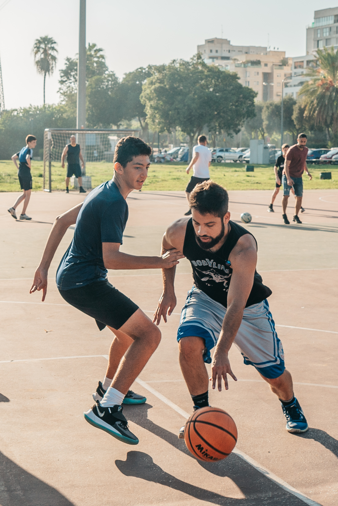
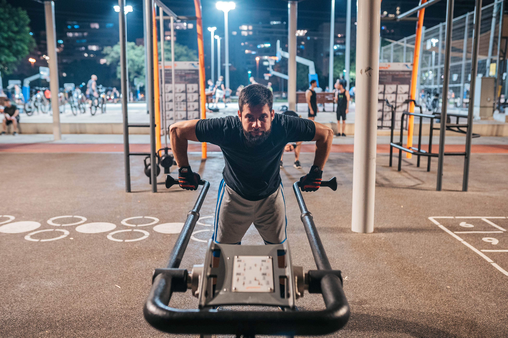
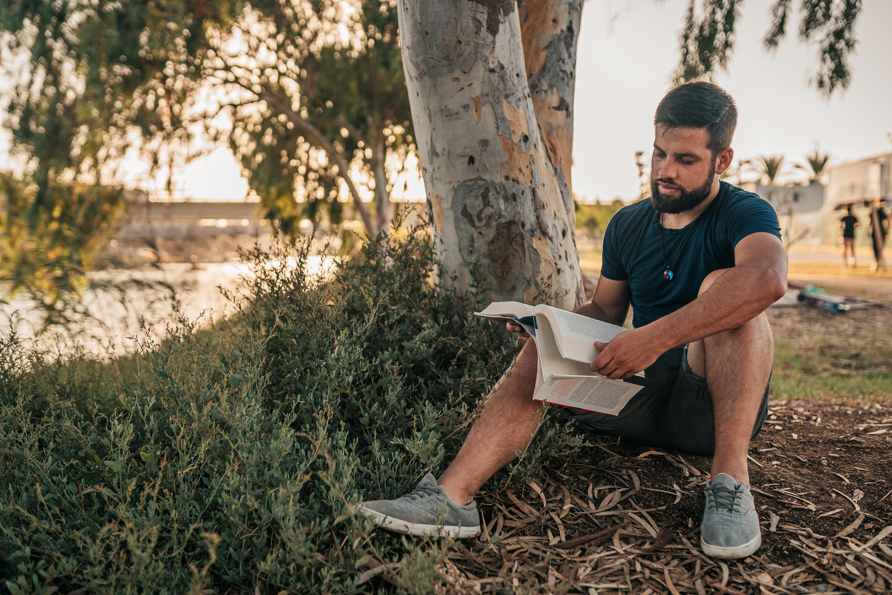
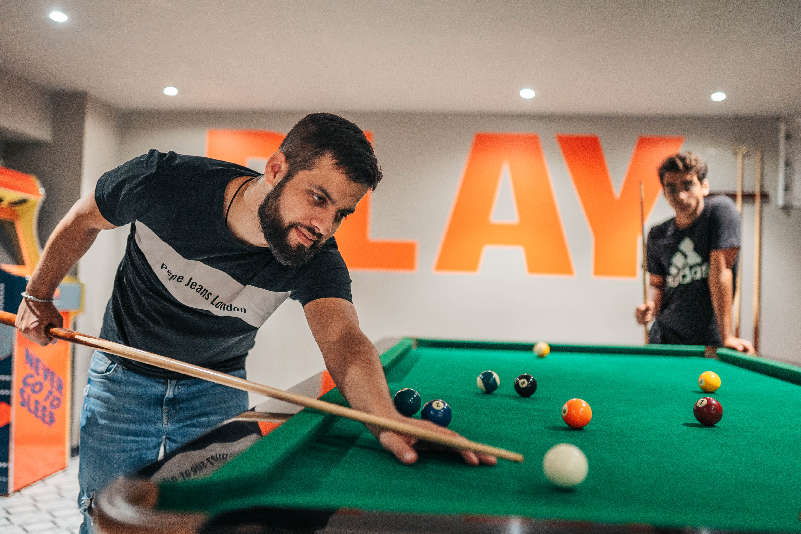
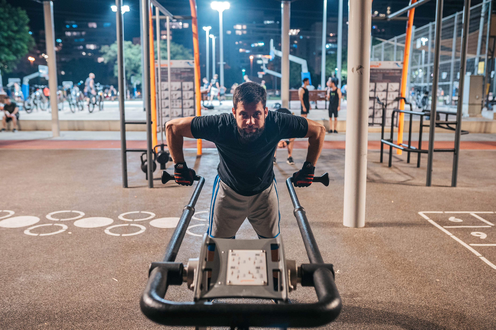
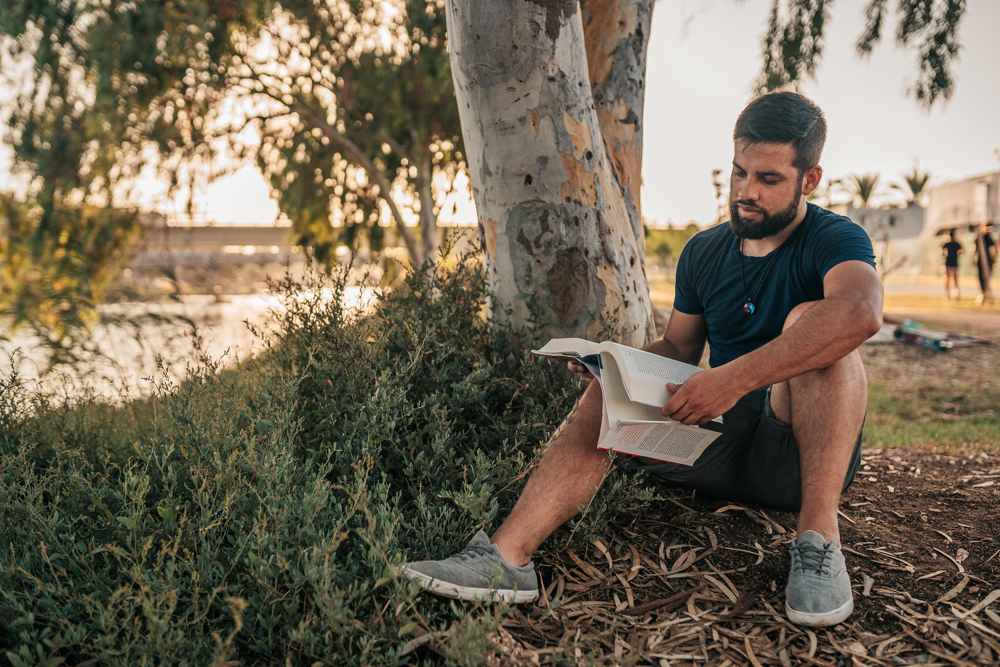
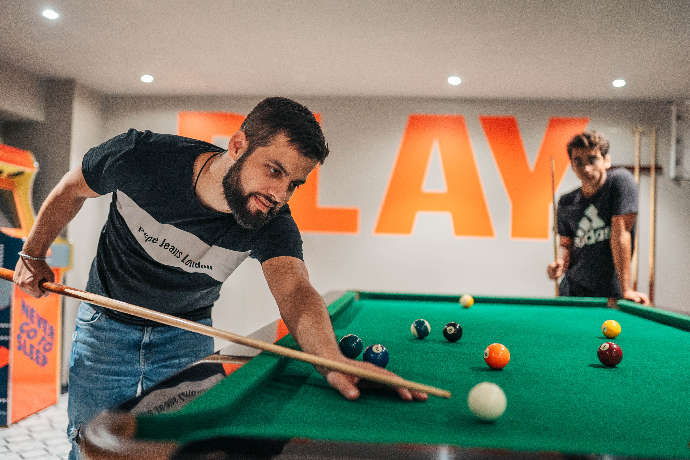

Owners Hobbies
Playing Basketball
part of my life for the past seven years. Starting at a young age, I had the
incredible opportunity to play in a professional league as a teenager, an
experience that shaped me both as a player and as an individual. The thrill
of stepping onto the court, the swish of the ball through the net, and the
camaraderie with my teammates fueled my love for the game. Basketball
has taught me discipline, perseverance, and the importance of teamwork. It
has instilled in me an unwavering dedication and a desire to continuously
improve and push my limits. Whether I'm shooting hoops with friends or
competing at a high level, the joy and passion I feel while playing basketball
are unmatched.

Programming
I have developed a profound love for learning how to develop websites,
and it has become a significant passion of mine. Exploring the vast world
of web development has opened up infinite possibilities for creativity and
problem-solving. Each line of code I write feels like a brushstroke on a
blank canvas, allowing me to shape and bring my ideas to life. The
constant evolution of technology and the web keeps me engaged and
constantly learning. Whether it's mastering HTML, CSS, or diving
deeper into JavaScript and various frameworks, I find immense joy in the
process of creating user-friendly and visually appealing websites. The
satisfaction that comes from seeing a project come together, with
perfectly aligned elements and seamless functionality, is incredibly
rewarding. Web development enables me to combine my logical thinking
with my artistic instincts, and it fuels my desire to always stay up-to-date
with the latest industry trends and best practices. With every new skill I
acquire and every project I complete, my love for web development
continues to grow, unlocking doors to boundless opportunities in the
digital realm.
Working Out
Engaging in the art of working out is like embarking on an empowering
journey, where my body and mind become one unstoppable force. With
each drop of sweat, I am reminded of the incredible strength and
resilience that resides within me. From the exhilarating rush of pushing
my physical limits to the peaceful clarity that follows a satisfying session,
working out has become the ultimate expression of self-care. It's a
thrilling dance between determination and discipline, as I challenge my
body to surpass previous milestones and redefine what I believe is
possible. The gym becomes my sanctuary, a place where stress evaporates
and energy surges through my veins. The rhythm of weights clanging, the
rhythmic beat of my heart, and the sound of my breath synchronizing
with my movements create a symphony of determination. Beyond the
physical benefits, working out brings mental clarity, boosts my
confidence, and ignites a sense of accomplishment like no other. It's a
reminder that I am capable of conquering obstacles, both within and
outside the gym. This hobby has taught me to embrace discomfort, to
push past limits, and to appreciate the incredible strength and resilience
of the human body. Through the pursuit of fitness, I've discovered the
power within me, and the drive to become the best version of myself,
inside and out.

Reading Books
Reading has woven itself into the very fabric of my soul, becoming an
essential part of who I am. The touch of a book in my hands ignites a
spark of excitement, as I embark on a journey to explore new worlds,
unravel mysteries, and connect with the deepest emotions of humanity.
The turning of each page is like stepping into a portal to a realm of
imagination, where characters come alive, their stories intertwining with
my own existence. Whether it's diving into the pages of a gripping thriller,
immersing myself in a thought-provoking non-fiction piece, or wandering
through the vivid landscapes of fiction, reading unlocks the door to a
universe of knowledge and understanding. It is in those moments,
engulfed in the aroma of ink and wisdom, that I find solace, inspiration,
and a sense of belonging. The written word has the power to transport
me, to challenge my perspective, and to ignite a passion for lifelong
learning. In the world of books, I find boundless treasures waiting to be
discovered, and infinite possibilities waiting to be explored. Reading is not
just a hobby—it's a lifelong love affair that shapes my thoughts, expands
my horizons, and continuously nourishes my soul.

Spending Time with friends
When it comes to hanging out with friends, we know how to turn up the
fun factor to maximum levels! Whether we're gathering around a pool
table, showing off our legendary skills or hitting up our favorite bars, the
laughter and good times are always guaranteed. With cue in hand, we
unleash our inner pool sharks, strategizing shots with exaggerated
dramatics and celebrating victories with outrageous victory dances. And
when the sun sets, we embark on epic bar-hopping adventures, where the
sound of clinking glasses mixes with joyful banter and infectious music.
From daring karaoke performances that make us the life of the party to
epic dance-offs that bring the floor to life, we create memories that will be
etched in our hearts forever. The nights are filled with endless laughter,
spontaneous adventures, and the kind of inside jokes that never fail to
make our sides ache. These engaging activities with friends are more than
just games and bars—they're bonding experiences that fuel our
friendships and remind us of the incredible joy that comes from sharing
unforgettable moments together. Cheers to endless fun-filled nights that
make us feel alive!

Working Out
Engaging in the art of working out is like embarking on an empowering journey, where my body and mind become one unstoppable force. With each drop of sweat, I am reminded of the incredible strength and resilience that resides within me. From the exhilarating rush of pushing my physical limits to the peaceful clarity that follows a satisfying session, working out has become the ultimate expression of self-care. It's a thrilling dance between determination and discipline, as I challenge my body to surpass previous milestones and redefine what I believe is possible. The gym becomes my sanctuary, a place where stress evaporates and energy surges through my veins. The rhythm of weights clanging, the rhythmic beat of my heart, and the sound of my breath synchronizing with my movements create a symphony of determination. Beyond the physical benefits, working out brings mental clarity, boosts my confidence, and ignites a sense of accomplishment like no other. It's a reminder that I am capable of conquering obstacles, both within and outside the gym. This hobby has taught me to embrace discomfort, to push past limits, and to appreciate the incredible strength and resilience of the human body. Through the pursuit of fitness, I've discovered the power within me, and the drive to become the best version of myself, inside and out.

Reading Books
Reading has woven itself into the very fabric of my soul, becoming an essential part of who I am. The touch of a book in my hands ignites a spark of excitement, as I embark on a journey to explore new worlds, unravel mysteries, and connect with the deepest emotions of humanity. The turning of each page is like stepping into a portal to a realm of imagination, where characters come alive, their stories intertwining with my own existence. Whether it's diving into the pages of a gripping thriller, immersing myself in a thought-provoking non-fiction piece, or wandering through the vivid landscapes of fiction, reading unlocks the door to a universe of knowledge and understanding. It is in those moments, engulfed in the aroma of ink and wisdom, that I find solace, inspiration, and a sense of belonging. The written word has the power to transport me, to challenge my perspective, and to ignite a passion for lifelong learning. In the world of books, I find boundless treasures waiting to be discovered, and infinite possibilities waiting to be explored. Reading is not just a hobby—it's a lifelong love affair that shapes my thoughts, expands my horizons, and continuously nourishes my soul.

Spending Time with friends
When it comes to hanging out with friends, we know how to turn up the fun factor to maximum levels! Whether we're gathering around a pool table, showing off our legendary skills or hitting up our favorite bars, the laughter and good times are always guaranteed. With cue in hand, we unleash our inner pool sharks, strategizing shots with exaggerated dramatics and celebrating victories with outrageous victory dances. And when the sun sets, we embark on epic bar-hopping adventures, where the sound of clinking glasses mixes with joyful banter and infectious music. From daring karaoke performances that make us the life of the party to epic dance-offs that bring the floor to life, we create memories that will be etched in our hearts forever. The nights are filled with endless laughter, spontaneous adventures, and the kind of inside jokes that never fail to make our sides ache. These engaging activities with friends are more than just games and bars—they're bonding experiences that fuel our friendships and remind us of the incredible joy that comes from sharing unforgettable moments together. Cheers to endless fun-filled nights that make us feel alive!
